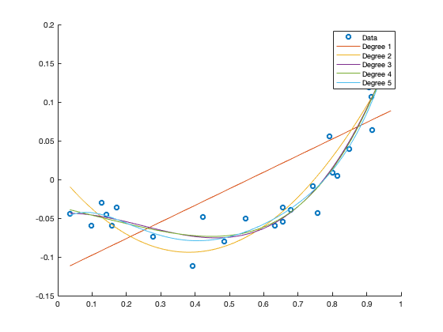

Homework 2 - Question 1
data = readtable('polydata.csv'); Y = data.Var2; Y_size = size(Y); disp("1a)"); X_d1 = create_Matrix_X(data, 1); B_ols_d1 = fitlm(X_d1, Y); fprintf("B_ols for polynomial degree 1 = \n"); disp(B_ols_d1.Coefficients.Estimate) X_d2 = create_Matrix_X(data, 2); B_ols_d2 = fitlm(X_d2, Y); fprintf("B_ols for polynomial degree 2 = \n"); disp(B_ols_d2.Coefficients.Estimate) X_d3 = create_Matrix_X(data, 3); B_ols_d3 = fitlm(X_d3, Y); fprintf("B_ols for polynomial degree 3 = \n"); disp(B_ols_d3.Coefficients.Estimate) X_d4 = create_Matrix_X(data, 4); B_ols_d4 = fitlm(X_d4, Y); fprintf("B_ols for polynomial degree 4 = \n"); disp(B_ols_d4.Coefficients.Estimate) X_d5 = create_Matrix_X(data, 5); B_ols_d5 = fitlm(X_d5, Y); fprintf("B_ols for polynomial degree 5 = \n"); disp(B_ols_d5.Coefficients.Estimate) %b)Scatter plot disp("1b)"); scatter(X_d1, Y) hold on myplot(X_d1, B_ols_d1.Coefficients.Estimate) myplot(X_d1, B_ols_d2.Coefficients.Estimate) myplot(X_d1, B_ols_d3.Coefficients.Estimate) myplot(X_d1, B_ols_d4.Coefficients.Estimate) myplot(X_d1, B_ols_d5.Coefficients.Estimate) legend('Data', 'Degree 1','Degree 2', 'Degree 3', 'Degree 4', 'Degree 5') snapnow %c) Cross-validation disp("1c)"); idxs = randperm(30); fprintf("When using 5-fold cross validation, best degree polynomial = %d \n",perform_cross_validation(data, 5, 5, idxs)); disp("From the plots, it looks like the third order polynomial fits the data with some noise. However on repeating this"); disp("experiment multiple times, when the data is permuted, the best fit with varies d=3,4,5. Observed that d=3 is mostly the best fit."); function min_idx = perform_cross_validation(data, k, d, idxs) average_MSE = zeros(d,1); Y = data.Var2; Y = Y(idxs); for j = 1:d X = create_Matrix_X(data, j); X = X(idxs, :); chunk_size = size(Y,1)/k; for i=1:k index = (i * chunk_size) - chunk_size; X_test = X(index+1:index+chunk_size, :); Y_test = Y(index+1:index+chunk_size, :); X_train = [X(1:index, :);X(index+chunk_size+1:end, :)]; Y_train = [Y(1:index);Y(index+chunk_size+1:end)]; B = fitlm(X_train,Y_train); yfit = predict(B, X_test); average_MSE(j) = average_MSE(j) + mean((Y_test-yfit).^2); end end average_MSE = average_MSE/k; fprintf("Average MSE for degree polynomial from d=1:%d is \n", d); fprintf("%f \n", average_MSE); [M, min_idx] = min(average_MSE); end function X = create_Matrix_X(data, d) Y = data.Var2; X = zeros(size(Y,1),d); for k = 1:d X(:, k) = data.Var1.^k; end end function myplot(X, B) t = linspace(min(X),max(X)); plot(t, polyval(flipud(B), t)) end
1a)
B_ols for polynomial degree 1 =
-0.1191
0.2142
B_ols for polynomial degree 2 =
0.0088
-0.5382
0.7046
B_ols for polynomial degree 3 =
-0.0442
0.0331
-0.5857
0.7963
B_ols for polynomial degree 4 =
-0.0353
-0.1075
-0.0113
-0.0447
0.4024
B_ols for polynomial degree 5 =
-0.0567
0.3964
-3.3845
8.7537
-9.3436
3.8535
1b)
 1c) Average MSE for degree polynomial from d=1:5 is 0.003221 0.000625 0.000419 0.000474 0.000630 When using 5-fold cross validation, best degree polynomial = 3 From the plots, it looks like the third order polynomial fits the data with some noise. However on repeating this experiment multiple times, when the data is permuted, the best fit with varies d=3,4,5. Observed that d=3 is mostly the best fit.